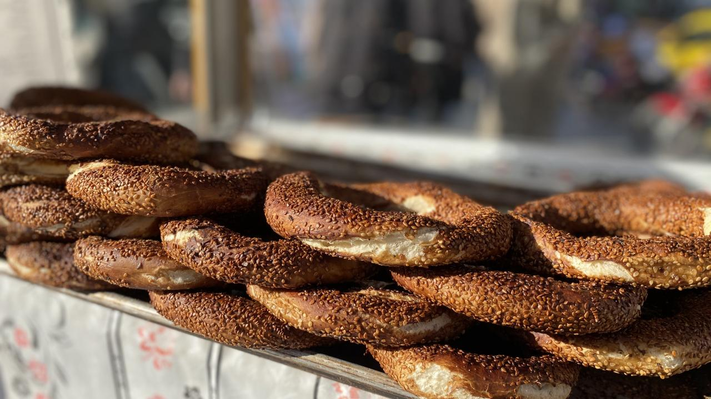
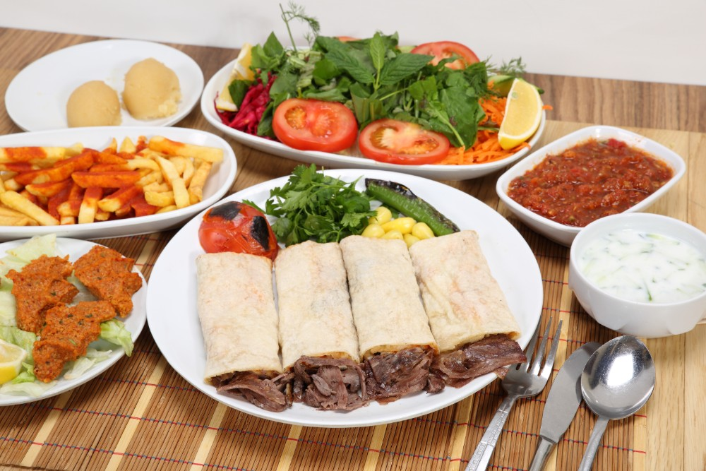
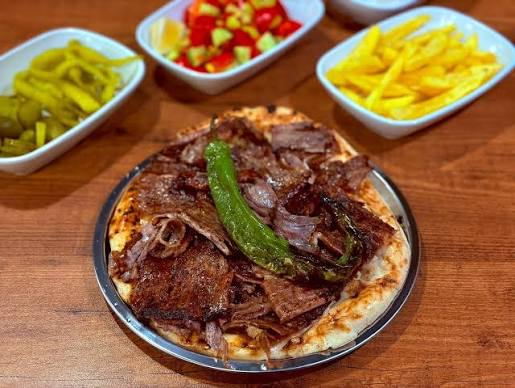
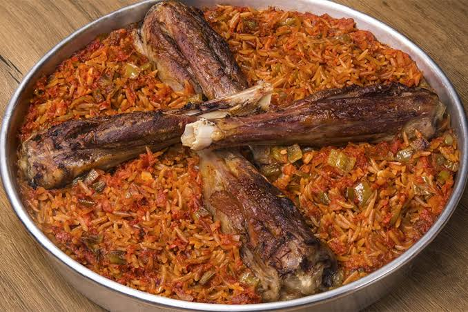

1. Çıtır Ankara Simidi

Sokak lezzetlerinin şahı! İncecik, bol susamlı ve çıtır çıtır yapısıyla sabah kahvaltılarının ve çay saatlerinin vazgeçilmezidir. Çay ile muazzam gider.

Sokak lezzetlerinin şahı! İncecik, bol susamlı ve çıtır çıtır yapısıyla sabah kahvaltılarının ve çay saatlerinin vazgeçilmezidir. Çay ile muazzam gider.
| Önerilen Mekan | Ortalama Fiyat |
|---|---|
| Seyyar Sokak Simitçileri | 20 TL |
| Tarihi Taş Fırınlar | 25 TL |

Ankara'nın efsane kültürü ASPAVA! Sos, Soğan, Kaşar üçlüsüyle hazırlanan bu döner dürüm, yanında gelen salata, patates, çiğ köfte ve dondurmalı irmik helvası ikramlarıyla midenizi bayram ettirir.
| Önerilen Mekan | Ortalama Fiyat |
|---|---|
| Gülçimen Aspava | 800 - 850 TL |
| Yıldız Aspava | 750 - 800 TL |

Kıymasız, %100 yaprak etten yapılan ve kendine has marinasyonuyla odun ateşinde pişen gerçek Ankara döneri. Peçenek Döner bu işin piri sayılır, porsiyonları çok doyurucudur.
| Önerilen Mekan | Ortalama Fiyat |
|---|---|
| Peçenek Döner | 750 - 800 TL |
| Süha Döner | 650 - 700 TL |

Arpa şehriye pilavı üzerine lokum gibi pişmiş kemikli etin gelmesiyle oluşan enfes bir lezzet. Özellikle Boğaziçi Lokantası'nda yediğinizde tadı damağınızda kalır.
| Önerilen Mekan | Ortalama Fiyat |
|---|---|
| Boğaziçi Lokantası | 850 - 900 TL |
| Tarihi Merkez Lokantası | 900 - 950 TL |